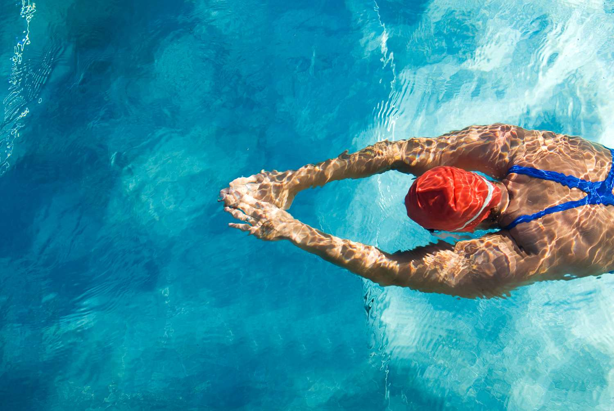
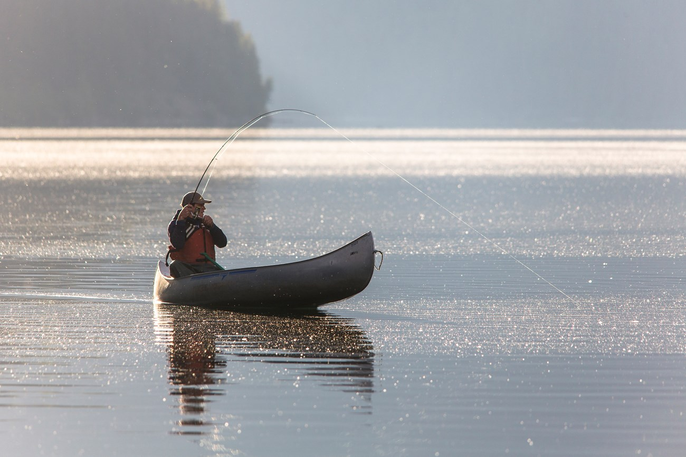

HOBİLERİM
Futbol
Küçüklükten beri yaptığım hayatımın en değerli hobisidir.Çeşitli turnuvalarda şampiyonluk ikincilik madalyalarım vardır.

Masa Tenisi
Ortaokulda tanıştığım bir hobidir. Lisede 3 sene üst üste okul şampiyonluklarım olmuştur.

Yüzme
Vücudumuzun her yerini çalıştırabildiğimiz nadir sporlardandır ve sağlık için yapılması gereken sporların başında yer alır.
Müzik Dinlemek
Müziğin her türlüsünü dinlemeyi severim bu konuda açık bir insanım.

Balık Tutmak
Herkese tavsiye edebileceğim bir hobidir. İnsanı sakinleştirmek ve huzura getiren bir hobi olduğunu düş